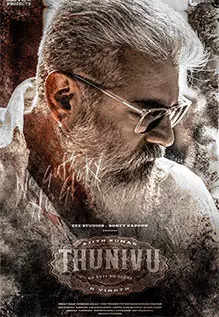

Thunivu Review: An Interesting Bank Robbery Let Down By Poor Writing

Rating:⭐⭐⭐
For once I finally can redeem myself and say I actually enjoyed an Ajith movie. We used to ridicule and say that this was Beast 2. I
sort of got hyped a lot because Ajith would be in a negative shade after a long time, Ghibrans songs and BGM would rule the movie, and
for once there would be no amma sentiment scenes. Ajith Kumar’s look by far has to be his best look. I really liked him having a beard
with plastic shades rather than him being clean shaven in Thunivu. First half was so entertaining in much aspects despite being fast.
Second half was average and bit of a letdown though. Especially the climax, where there were obvious illogical sequences. Another thing
I wished was at least provide more screen presence for Manju because she was wild, and the other supporting characters in the flashback scenes.
Other than that, Thunivu is also the epic Pongal winner for this year! Also please don’t tell me which movie is better. I enjoyed both these movies
fair and square despite them being made on a mediocre attempt.